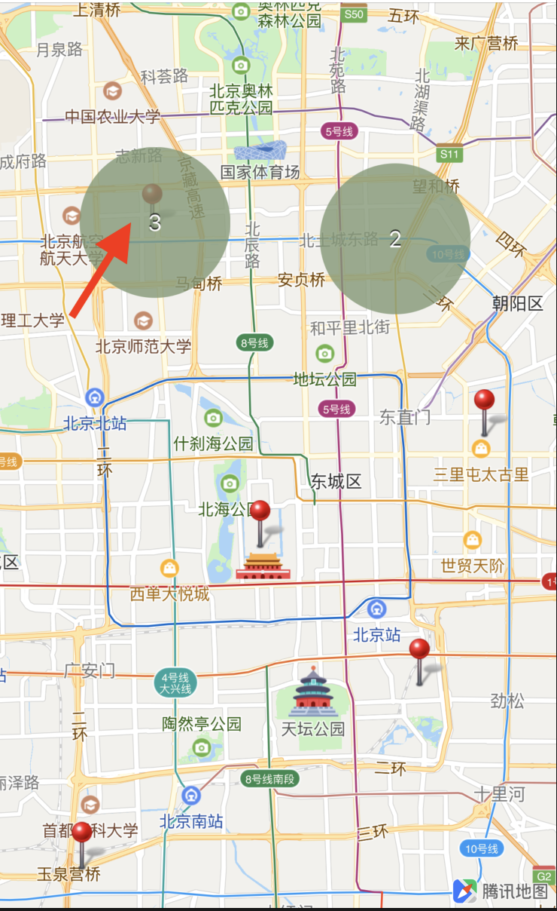
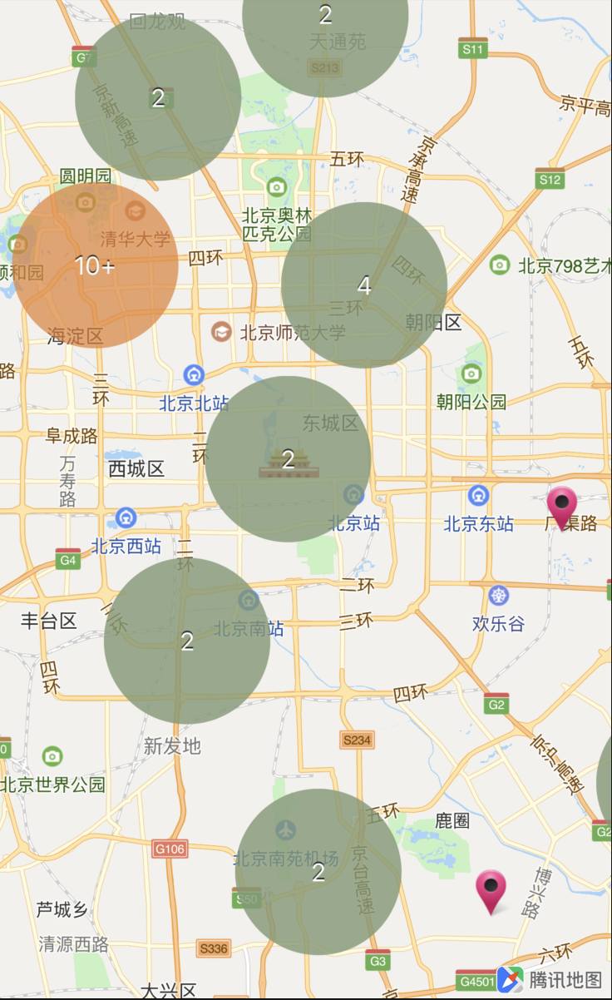
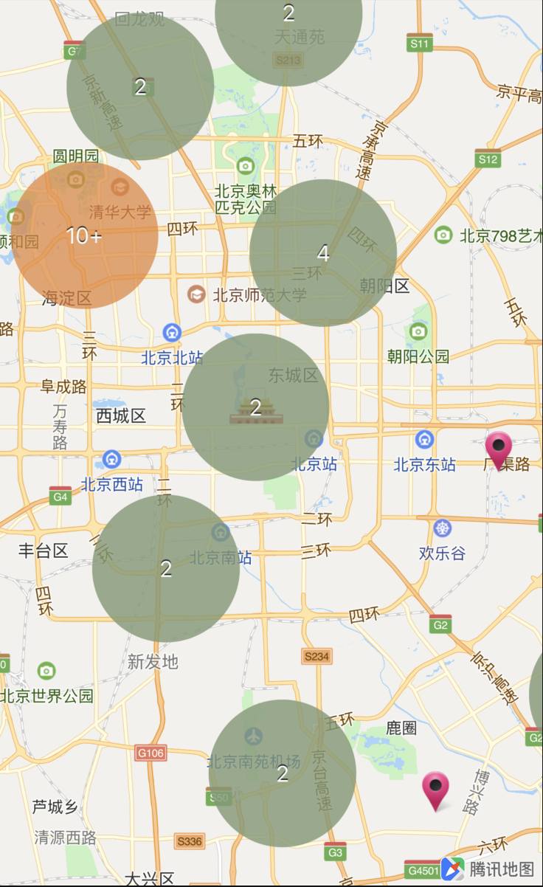

点聚合
简介
当地图上需要展示的marker过多，可能会导致界面上marker出现压盖，展示不全，并导致整体性能变差，用户使用卡顿的显现。针对此类问题，推出点聚合能力，将大量Maker通过聚合的方式进行展示。
点数据、聚合管理类介绍
QMUAnnotation点数据类
QMUAnnotation 类是可被聚合的原始点数据，用户获取数据后可创建对应的 QMUAnnotation。一般情况下以数组形式把大量的聚合点数据存储起来。
属性说明：
| 属性 | 说明 |
|---|---|
| CLLocationCoordinate2D coordinate | 地理坐标 |
| NSString *title | 标题 |
| NSString *subtitle | 副标题 |
| QMUPoint point | 代表其位置，被用于参与聚合运算。默认为墨卡托坐标 |
接口说明：
// 设置坐标
- (void)setCoordinate:(CLLocationCoordinate2D)newCoordinate
// 当子类有新添加字段时，子类有可能需要重载来帮助判断是不是同一个点
- (NSUInteger)hash;
// 当子类有新添加字段时，子类有可能需要重载来帮助判断是不是同一个点
(BOOL)isEqual:(id)object;
初始化示例：
QMUAnnotation *anno = [[QMUAnnotation alloc] init];
anno.title = @"clusterAnno";
anno.coordinate = CLLocationCoordinate2DMake(latitude, longitude);
QMUClusterManager构建点聚合管理类
当构建好所需的聚合点数据后，需要一个点聚合管理类 QMUClusterManager 将聚合点数据进行管理。
QMUClusterManager 为聚合点功能的入口，通过此类的实例来配置聚合功能，和管理数据。
属性说明：
| 属性 | 说明 |
|---|---|
| CGFloat distance | 聚合的范围，单位为屏幕坐标。 |
| id delegate | 代理类，实现其方法可用于自定义聚合的效果 |
| QMapView* map | map实例 |
| int thresholdZoomlevel | 当zoomLevel > thresholdZoomlevel时为只计算屏幕附近的聚合点； 当zoomLevel<=thresholdZoomlevel时计算所有的聚合点. 可根据数据分布设置为适合的值。 如果设置为>18或<4值时, 则只会采用一种策略。默认为7。 |
接口说明：
// 创建一个实例.
- (instancetype)initWithMap:(QMapView*)map;
// 添加原始被聚合点
- (void)addAnnotaion:(QMUAnnotation*)anno;
// 添加批量的原始被聚合点
- (void)addAnnotations:(NSArray*)annos;
// 移除原始被聚合点
- (void)removeAnnotaion:(QMUAnnotation*)anno;
// 移除批量的原始被聚合点
- (void)removeAnnotations:(NSArray*)annos;
// 移除所有的原始被聚合点
- (void)clearAnnotations;
/** @brief
* 当你想强制重新聚合时调用。地图产生变化后需调用刷新聚合点状态
* 如 mapView: regionDidChangeAnimated: gesture: 等地图区域状态回调接口
* (当仅改配置如distance, threeholdZoomlevel时会需要)
*/
- (void)refreshCluster;
注意：如不在 mapView: regionDidChangeAnimated: gesture: 调用 refreshCluster, 当地图区域发生变化后，点聚合效果不会刷新，示例如下：
- (void)mapView:(QMapView *)mapView regionDidChangeAnimated:(BOOL)animated gesture:(BOOL)bGesture
{
[self.manager refreshCluster];
}
初始化示例：
// 继承代理
@interface ClusterAnnoViewController () <QMUClusterProtocol>
@end
// 聚合点数据数组
NSArray* datas = [self loadData];
// 基于当前的 mapView 进行初始化
self.manager = [[QMUClusterManager alloc] initWithMap:self.mapView];
// 设置代理
self.manager.delegate = self;
self.manager.distance = 56;
// 将聚合点数据传入
[self.manager addAnnotations:datas];
QMUClusterProtocol协议
QMUClusterProtocol 用于配置自定义的聚合效果，用户通过- (BOOL)clusterAnnotation: withAnnotation:接口配置自定义的聚合效果。
// 决定特定的2个点是否需要被聚合,只有当返回YES且符合距离时才会被聚合，如果不实现则任意两原始点都被聚合
- (BOOL)clusterAnnotation:(QMUAnnotation* )anno1 withAnnotation:(QMUAnnotation*)anno2
{
// TypedClustableAnnotation 为 QMUAnnotation 的子类
TypedClustableAnnotation *l = (TypedClustableAnnotation*)anno1;
TypedClustableAnnotation* r = (TypedClustableAnnotation*)anno2;
// type 的值为4时，该点不会被聚合
if (l.type == 4 || r.type == 4) {
return NO;
}
}
示例如下：左上角的一个点（ type 值为4）没有被聚合，其他的三个点被聚合在一起

构建点聚合View
通过 QMUClusterManager 将聚合点数据传入后，用户需要构建聚合点的 View 才能将数据显示在地图上。
QMUClusterAnnotation点聚合数据类
在<QMapViewDelegate>回调mapView: viewForAnnotation:中可通过判断 annotation 是否为 QMUClusterAnnotation 类进而构建 QMUClusterAnnotationView 类，将数据显示在地图上。
QMUClusterAnnotation 代表了经过聚合计算后的单个聚合点数据，包含了当前范围的所有原始点。有可能有多个原始点，也有可能只有一个。
属性说明：
| 属性 | 说明 |
|---|---|
| NSUInteger count | 该聚合点包含的原始点个数 |
| NSMutableSet *items | 该聚合点包含的所有原始点 |
QMUClusterAnnotationView点聚合视图
QMUClusterAnnotationView 预定义的聚合点样式 view，一般与QMUClusterAnnotation配套使用。它包含View本身，一个背景图片，一个显示文字，可修改显示效果后直接使用。
属性说明：
| 属性 | 说明 |
|---|---|
| UIImageView *background | 景图片 |
| UILabel *displayText | 显示的文字 |
构建聚合点 View 的示例：
- (QAnnotationView *)mapView:(QMapView *)mapView viewForAnnotation:(id<QAnnotation>)annotation
{
// 判断是否为聚合点类
if ([annotation isKindOfClass:[QMUClusterAnnotation class]])
{
QMUClusterAnnotation* ca = (QMUClusterAnnotation*)annotation;
// 根据聚合点包含的原始点个数设置样式 view
if (ca.count > 1) {
static NSString *clusterReuseIndetifier = @"cluster";
QMUClusterAnnotationView *annotationView = (QMUClusterAnnotationView*)[mapView dequeueReusableAnnotationViewWithIdentifier:clusterReuseIndetifier];
// 样式的背景色
annotationView.backgroundColor = [UIColor colorWithRed:0.5 green:0.6 blue:0.45 alpha:0.8];
// 显示的文字
annotationView.displayText.text = [[NSNumber numberWithUnsignedInteger:ca.count] stringValue];
if (ca.count >= 100) {
......
}
else if (ca.count >= 10) {
......
}
......
......
return annotationView;
}
return nil;
}
效果示例图
 

更详细的设置请参考 demo